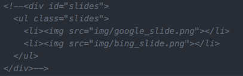
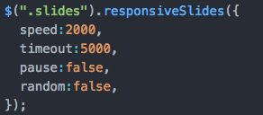
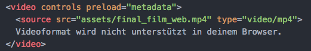

Tagesjournal 10.01.
Notizen
- Favicons
- Responsive Slides
- Meidaelemente eibauen
Selbstständig verfasster Text mit neuen Erkenntnissen der Unterrichtseinheit
Favicons
Favicons werden oft im Browser, oben im Titel benutzt oder wenn man ein Lesezeichen erstellt. Sie sind .ico Dateien und werden im head Bereich eingebunden
 Dazu wird jQuery benötigt
Mediaelemente einbauen
mit <video> oder <audio> tag und in dem jeweiligen tag die source angeben
